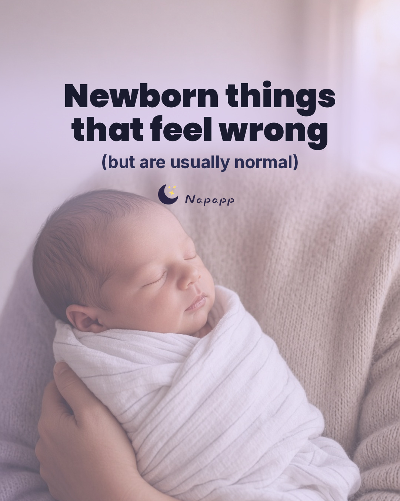
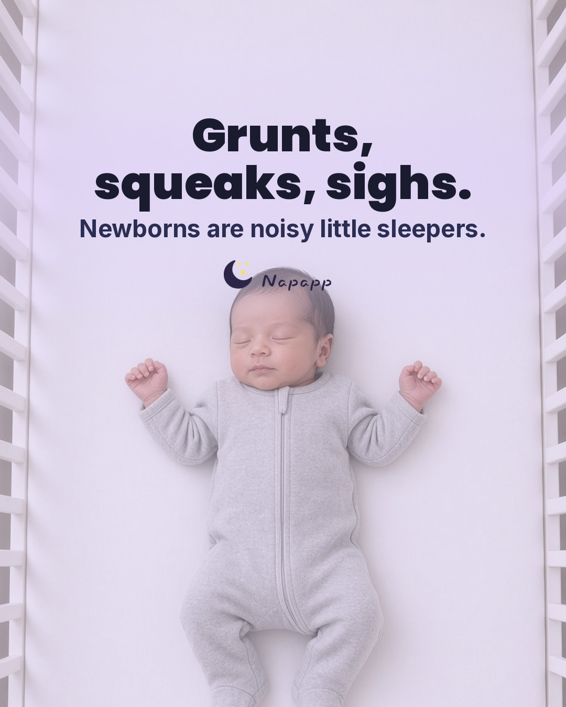
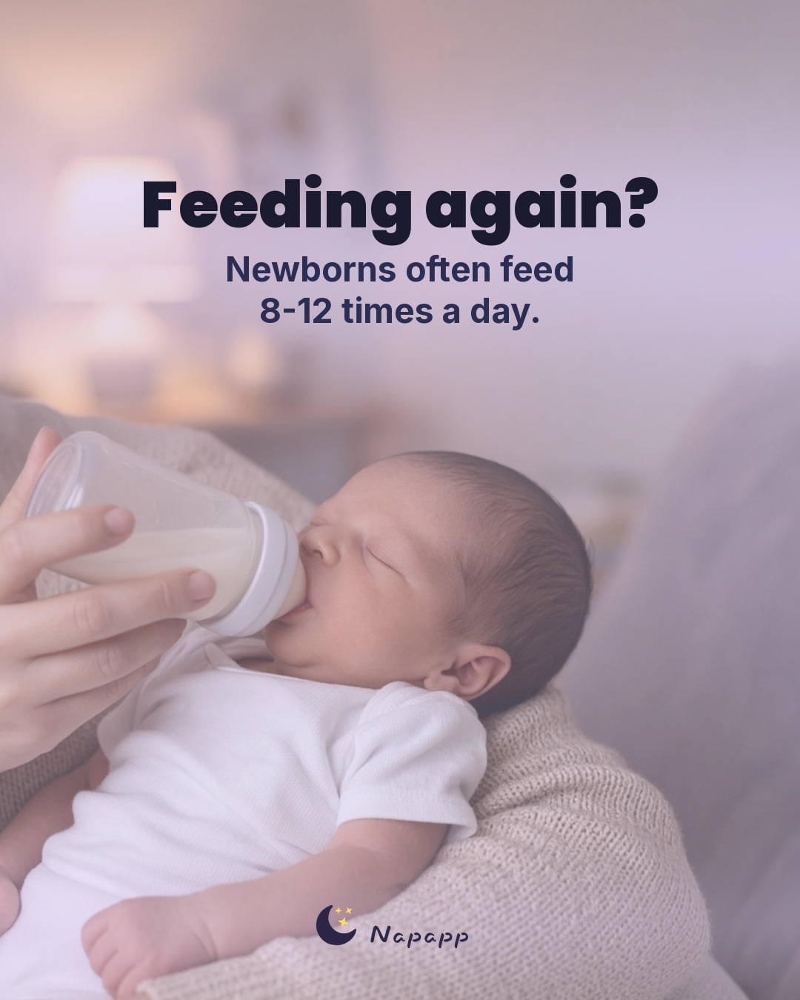
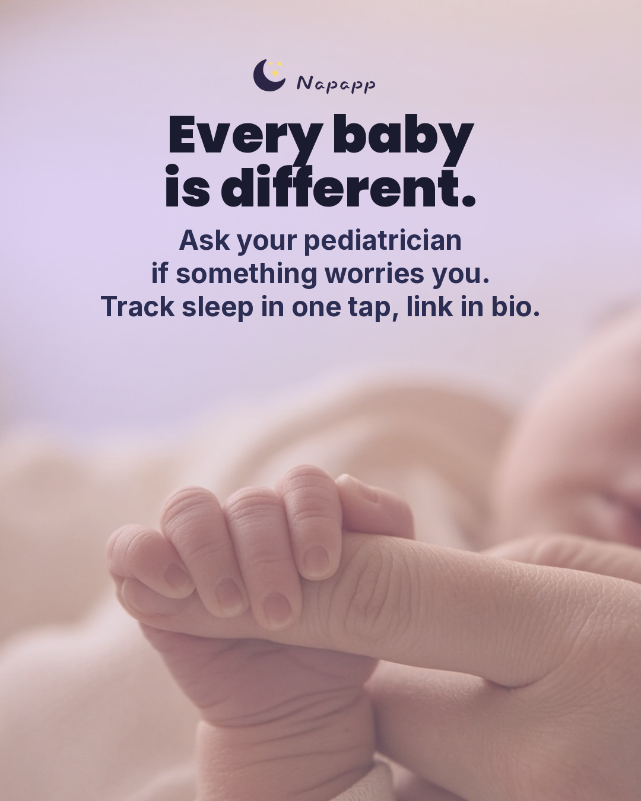

Sound
Instagram (@getnapapp)
How to post on Instagram: Post from the Instagram app (not Meta Business Suite). Open the song's audio link on your phone and tap 'Use audio'. Don't boost (or tag as a paid partnership) a Reel that uses a licensed song.
Notes for this post: SCHEDULE (Nov 7-15 plan approved by Denis per Garry, Nov 6): Nov 10 17:00 ET. TikTok: carousel. IG/FB: 9:16 slideshow Reel (CC0 bake-in fallback works). Still needs final approval per the plan. Earlier dates in these notes are superseded. Slideshow Reel on IG (Denis approved IG Reels per Garry, Nov 3), around Nov 19. Calm, reassuring 'normal newborn things' mood: soft, no hype, spooky or Christmas tracks, no Angel Of My Dreams. IG: open the audio link in the Instagram app and tap 'Use audio'. FB Page: 'Royalty-free' only, or bake in CC0 soft-as-a-dry-pillow. TikTok picks are provisional. Confirm in the Commercial Music Library. Re-check around Nov 18.
Notes for this post: SCHEDULE (Nov 7-15 plan approved by Denis per Garry, Nov 6): Nov 10 17:00 ET. TikTok: carousel. IG/FB: 9:16 slideshow Reel (CC0 bake-in fallback works). Still needs final approval per the plan. Earlier dates in these notes are superseded. Slideshow Reel on IG (Denis approved IG Reels per Garry, Nov 3), around Nov 19. Calm, reassuring 'normal newborn things' mood: soft, no hype, spooky or Christmas tracks, no Angel Of My Dreams. IG: open the audio link in the Instagram app and tap 'Use audio'. FB Page: 'Royalty-free' only, or bake in CC0 soft-as-a-dry-pillow. TikTok picks are provisional. Confirm in the Commercial Music Library. Re-check around Nov 18.
- Sunshine (Instrumental) · Twista primaryNo lyrics, so it sits under text and tips without competing. Instrumental, ideal under informational slidesHow: Best: open https://www.instagram.com/reels/audio/2920100688130624/ on the phone and tap 'Use audio' (exact track). Or in the Reels editor, Add audio and search 'Sunshine (Instrumental) Twista', then pick the result whose artist is exactly 'Twista' (not a cover, sped-up version or 'original audio').Confidence: MEDIUM: trending on IG per the cited chart, and the audio page ID comes from that chart; availability on @getnapapp (Creator, Canada) is UNVERIFIED until it appears in the picker; lyrics/section not listened to
- Linger · The Cranberries backupSoft, cozy and slow; suits calm personal or explainer posts. Soft, cozy alternativeHow: Best: open https://www.instagram.com/reels/audio/192068608180555/ on the phone and tap 'Use audio' (exact track). Or in the Reels editor, Add audio and search 'Linger The Cranberries', then pick the result whose artist is exactly 'The Cranberries' (not a cover, sped-up version or 'original audio').Confidence: MEDIUM: trending on IG per the cited chart, and the audio page ID comes from that chart; availability on @getnapapp (Creator, Canada) is UNVERIFIED until it appears in the picker; lyrics/section not listened to
- Salvatore · Lana Del Rey backupSlow, dreamy and soft; a calm late-night mood that sits under text-heavy sleep slides without fighting themHow: Best: open https://www.instagram.com/reels/audio/191646934740785/ on the phone and tap 'Use audio' (exact track). Or Add audio and search 'Salvatore Lana Del Rey', and pick the result whose artist is exactly 'Lana Del Rey' (not a cover, sped-up version or 'original audio'). Tracygram marks the most-used section around 3:20, so pick that part or a soft early section.Confidence: MEDIUM: rising on IG per Tracygram's Nov 3 chart (official audio page link); availability on @getnapapp (Creator, Canada) UNVERIFIED until it appears in the picker; lyrics/section not listened to
Instagram backup (royalty-free)
- When: Use this if none of the IG songs appear or they're greyed out: a 'Royalty-free' Sound Collection track (any account type), or bake in the CC0 track.
- Sound Collection ('Royalty-free'): In the Reels editor tap Add audio, type 'lullaby', and only pick a track tagged 'Royalty-free' (Meta's label for Sound Collection audio). Write the exact title and artist back here once you've picked one.
- CC0 track (baked in): Soft as a dry pillow (Loyalty Freak Music), Not in the picker. Re-render with: reel/render_reel.py ... --track soft-as-a-dry-pillow (music baked in, -16 LUFS), then upload with no in-app sound
Facebook Page
- Meta Sound Collection: first result labelled 'Royalty-free' for 'lullaby' (exact title not verifiable from public sources) · as listed in the picker (unverified) primarySoft, sleepy instrumental under calm educational slidesHow: In the Reels editor tap Add audio, type 'lullaby', and only pick a track tagged 'Royalty-free' (Meta's label for Sound Collection audio). Write the exact title and artist back here once you've picked one.Confidence: MEDIUM: Meta's docs confirm Sound Collection / 'Royalty-free' audio is usable by business accounts and Pages; no specific track verified (the catalogue needs a login, which isn't allowed)
- Meta Sound Collection: first result labelled 'Royalty-free' for 'soft piano' (exact title not verifiable from public sources) · as listed in the picker (unverified) backupQuiet piano bed; lets the on-screen text do the workHow: In the Reels editor tap Add audio, type 'soft piano', and only pick a track tagged 'Royalty-free' (Meta's label for Sound Collection audio). Write the exact title and artist back here once you've picked one.Confidence: MEDIUM: Meta's docs confirm Sound Collection / 'Royalty-free' audio is usable by business accounts and Pages; no specific track verified (the catalogue needs a login, which isn't allowed)
- Soft as a dry pillow · Loyalty Freak Music backup (baked-in)Chill, low-key bed for an informational postHow: Not in the picker. Re-render with: reel/render_reel.py ... --track soft-as-a-dry-pillow (music baked in, -16 LUFS), then upload with no in-app soundLicence: CC0 1.0 (reel/music/manifest.json, sha256-checked)Confidence: HIGH for licence (CC0, commercial use OK, confirmed on archive.org + artist page); mood UNVERIFIED (nobody has listened yet); small risk of a false Content ID claim (artist FAQ)
TikTok picks
- Chopin Nocturne No. 2 (Piano Mono) · moshimo sound designCalm bedtime piano; reassuring 'common pattern, not something you did wrong' [DataSocial: cleared for business, no vocals]
- Ain't Nobody Else Like You · Cass ElliotTender, warm and uncrowded; still on Octohog (#28) and Kabo (#19) on Oct 31, replacing Runaway, which fell off both charts [Octohog: Cleared, Oct 30 11:41 PM ET]
- Sick Beat · Kero Kero BonitoBright and playful, back on Kabo's board (#20) Nov 3; replaces the feeling (Steve Lacy), off Kabo's top 20 since Nov 2 [Octohog: Cleared, Oct 30 11:41 PM ET]
Picks as of Nov 6, 2026, 1:52 PM ET
Only use sounds cleared for business use: TikTok's Commercial sounds list; on the Facebook Page only Sound Collection tracks tagged 'Royalty-free' (or the baked-in CC0 track); on Instagram only the songs listed here, added via their audio link, or the royalty-free backup.
Happy with it? Go back to the calendar and tap Approve on this post.